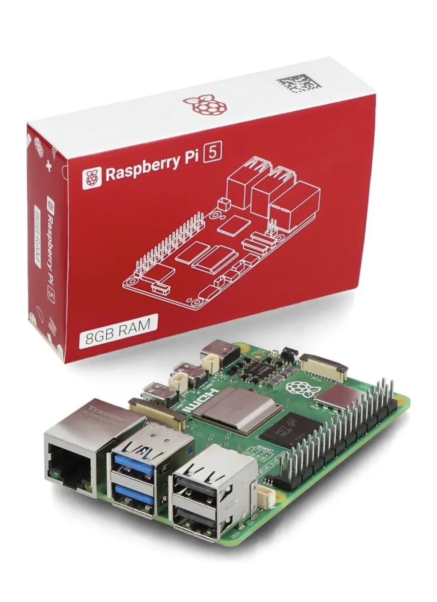
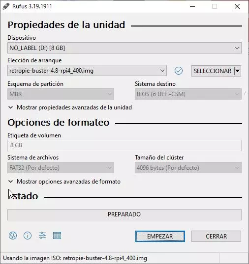
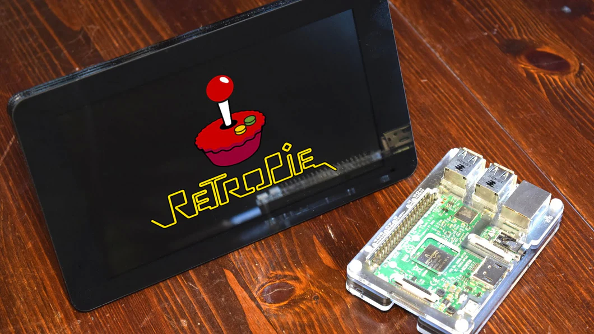

Primero debemos dejar en calro que RetroPie es un emulador el cual se suele utilizar para convertir diferentes sistemas en arcades, como en este caso se ara con una Raspberry Pi

y una Raspberry Pi es una computadora simple de una placa la cual tiene multiples usos, entre los caules esta convertirse en una arcade retro con RetroPie

· El primer paso es descargar la imagen S.O. desde la pagina de RetroPie acorde a la raspberry pi que tengamos

· Tras descargarlo deberemos descomprimir el archivo en formato .gz para acceder a la imagen
· para el siguiente paso se necesitara un usb con al menos 8 gb de memoria para realizar la carga de S.O. en el sistema mediante Rufs por ejemplo aunque se puede usar el programa de preferencia

· Iniciando el programa como administrador introduciomos la usb y esperamos a que el programa la reconozca automaticamente
· Despues de esto empezamos con el proceso lo cual nos hara perder todo el contenido del usb que tubiera anteriorente, esto seleccionando disco o imagen ISO
· seleccionamos la imagen que descomprimimos anteriormente
· Luego de esto inalmente damoscomienzo al proceso
· por ultimo esta se conecta a la raspberry pi lo cual la convertira en una arcade y funcionara de esta manera mientras este conectado a la Raspberry Pi
